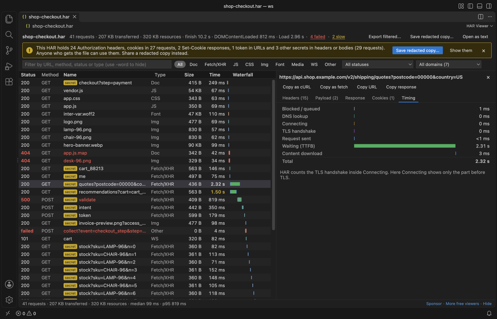

Open files in VS Code and Cursor / Developer files
Read a HAR file offline in VS Code
A HAR capture holds the headers, cookies and tokens of every request, so it is safer to read it on your own machine. The free HAR Viewer opens .har files in VS Code with no network calls: a request table, a timing waterfall, filters, and a banner when it finds secrets. "Save a Redacted Copy" writes a version you can share.
Free, MIT license. Extension ID zovo.zovo-har-viewer, version 0.2.2. Needs VS Code 1.90.0 or newer.
This guide is also in Українська.

Steps in VS Code
- Install HAR Viewer from the Marketplace, or press Ctrl+P (Cmd+P on macOS) and run
ext install zovo.zovo-har-viewer. - In Chrome, Edge or Firefox DevTools, open Network and pick "Save all as HAR". In Safari, use "Export HAR".
- Click the
.harfile in VS Code. - Filter by type (Fetch/XHR, JS, Img and more), status, domain or text such as
api -stock. - Select a request to see headers, payload, cookies and the response. Copy it as cURL or fetch.
Steps in Cursor, Windsurf or VSCodium
- Open the Extensions view with Ctrl+Shift+X (Cmd+Shift+X on macOS).
- Search for
zovo.zovo-har-viewerand click Install. Cursor, Windsurf and VSCodium install from Open VSX, where it is published aszovo/zovo-har-viewer. - If your editor has no gallery, download the .vsix from the Open VSX page and run "Extensions: Install from VSIX...".
- Then use it the same way as in VS Code.
What HAR Viewer handles
- Timing per request: DNS, connect, TLS, waiting and download.
- Redaction of Authorization and API key headers, cookie values, tokens, passwords and JWTs. The original file is never changed.
- In the README test, a 47 MB capture with 30,000 requests showed all rows in under a second.
What it does not do
- Redaction works by field name. Unusual names and binary bodies are not found, so read the copy before you send it.
- WebSocket frames are not listed. Pages in one capture are not grouped.
- Files over 300 MB show a message.
Other options
- Chrome DevTools. You can drag a .har file into the Network panel to load it back into DevTools.
- Google Admin Toolbox HAR Analyzer. A web page from Google that reads HAR files in the browser.
- HAR Viewer (
unclebeast.har-viewer, 33,744 installs, not on Open VSX). Another VS Code extension with the same name. Not on Open VSX.
Install counts and Open VSX status were checked on 8 November 2026. Descriptions in quotes are the extensions' own.
Questions
Is it safe to share a HAR file?
Not as it is. It can hold session cookies and access tokens. Save a redacted copy first, and read it before you send it.
Can I edit the HAR?
The viewer is read-only. Use "Open as text" to edit the JSON.
Does it send the file anywhere?
No. It makes no network calls and sends no telemetry.
More about HAR Viewer
Read the HAR Viewer page for every feature and setting, or the source code on GitHub.
Related guides
- Remove tokens and cookies from a HAR file before you share it
- Copy a request from a HAR file as cURL
- Read your Claude Code history in VS Code
- Compare two folders in VS Code
Support this work
If this extension saves you time, you can support the work on GitHub Sponsors. Monthly tiers start at $5, and one-time tiers start at $15. Sponsorship is optional, and the tool works the same without it.
Need your format supported?
Open a format request with a sample file, and I reply there whether it can be done. For USD 299 once, through this GitHub Sponsors tier, I add your file format or a missing feature to this extension, with tests, within 7 days.